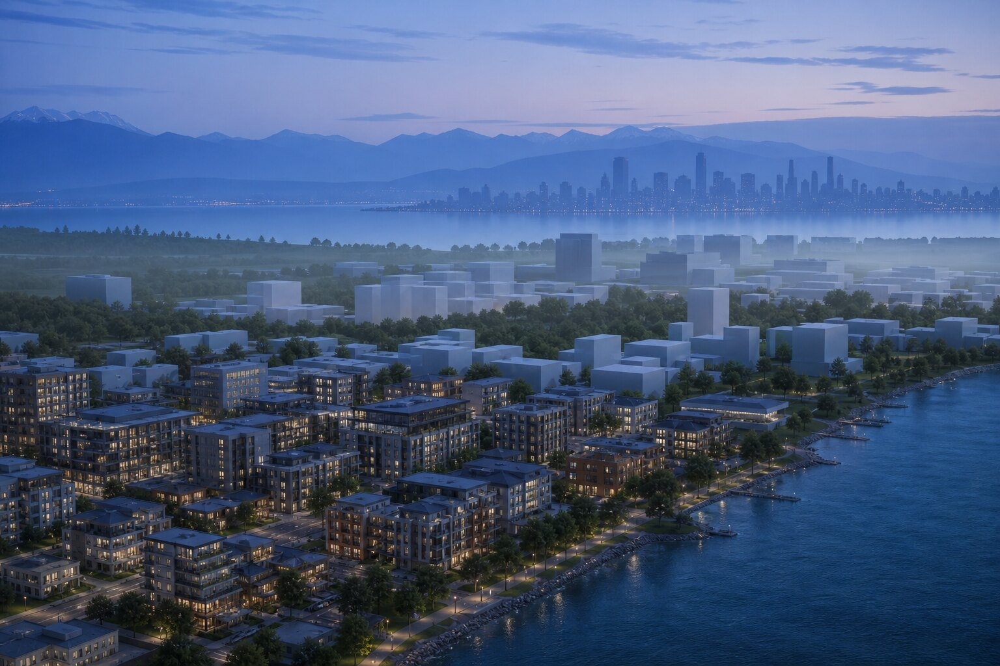

When should architects model city context for real-time review?
Model city context when views, movement, scale or adjacency are design questions rather than decorative scenery. Build only the context that can change a decision, organize it in zones, and use a real-time link for camera and atmosphere studies. A flat background is adequate only when the camera and relationship to place are fixed.
An artificial island off Batumi is difficult to explain with one handsome horizon. Move the camera and the trick runs out of coast.
A recent Architect Magazine feature, sponsored by Chaos, describes Morevi Studio's visualization work for Ambassadori Island Batumi. The 84-hectare proposal includes an island, hotel and wider urban development. Because the brief required the island to feel connected to the Georgian city, the team modeled Batumi and the island as two linked sections rather than placing the project against static backgrounds.
It is a vendor-sponsored case, not an independent benchmark. Still, the production choice is worth stealing. Context that carries design meaning should behave like a model, not wallpaper.
What makes context consequential?
Context is consequential when changing it changes the architectural judgment. A tower's apparent height depends on its neighbors. A waterfront promenade depends on the line between city, shore and water. A lobby view depends on what the glass actually frames.
Ask whether a camera move, a weather change or a new phase would expose the background as false. If the answer is yes, the context carries more responsibility than a matte painting should.
This does not mean modeling every drain cover in a five-kilometre radius. The goal is decision-bearing context. Major massing, coastline, topography, infrastructure, vegetation bands and recognizable anchors usually matter before storefront detail. Our site-context review makes a related point: the information chain matters more than visual abundance.
Why split a large environment into zones?
Morevi Studio reportedly separated the Batumi environment from the island and coastal section, then brought both into one navigable scene. That is not merely a performance tactic. It gives the team boundaries for authorship, updates and diagnosis.
A city zone can be revised without treating the island as collateral damage. A coastal zone can carry finer vegetation and ground detail near the cameras that need it. Distant districts can use simpler geometry because their job is silhouette and scale.
| Zone | Information to preserve | Detail to defer |
|---|---|---|
| Project core | Geometry, materials, entrances, levels | Temporary dressing |
| Immediate edge | Ground, roads, shore, planting, access | Remote interiors |
| City frame | Skyline, landmarks, major movement lines | Small facade components |
| Distant environment | Topography, horizon, atmosphere | Object-level detail |
Use stable coordinates and named origins. Store the source and update date for each zone. A beautiful city model with an unexplained offset is a very large ornament.

What does real-time review expose?
A static render proves that one camera can be made convincing. A navigable environment asks harder questions. Does the island still read as connected from the boulevard? Does the hotel block the mountain marker? Does the arrival sequence reveal the project in the intended order?
Chaos says Vantage can receive a live ray-traced scene from 3ds Max, Maya, SketchUp, Rhino, Revit and Cinema 4D. Its official feature page also says DCC changes appear through Live Link and lists batch camera rendering, VR interaction, USD and MaterialX support. Those are vendor-described capabilities. Hardware, file complexity and feature support still need a project-specific trial.
The important shift is from approving a frame to interrogating a place. Cameras can be discovered after the environment exists. Lighting and weather can be changed while the spatial relationship remains visible. Client feedback can point to a location rather than a Photoshop layer.
Real time is no guarantee of truth. It simply makes more views cheap enough to inspect. That is useful because architectural errors are often camera-dependent little cowards.
Where does AI belong in the scene?
AI can help populate, relight or polish views, but it should not be allowed to invent the relationship under review. If the question is whether the island connects to Batumi, a generator that quietly moves the skyline has answered a different question with impressive confidence.
Keep an unaltered real-time frame beside any AI-treated output. Use the treatment for atmosphere or option communication, then compare consequential edges: coast, roads, towers, horizon, access and project silhouette. The intervention ledger offers a simple way to record what changed after the scene render.
For generated surroundings, mark which elements are illustrative. A row of invented buildings can be harmless in a mood study and disastrous in a planning conversation. The difference is not image quality. It is the claim attached to the image.
How much context is enough?
Begin with the decision and work outward. If the review concerns arrival, model the route, junctions, grade and visible landmarks. If it concerns skyline impact, prioritize massing, terrain, lens discipline and verified viewpoints. If it concerns waterfront experience, the edge condition deserves more attention than an inland block that never enters frame.
Set a context radius for each camera family, then identify what must remain three-dimensional beyond it. A distant mountain may need accurate silhouette but no texture detail. A nearby boulevard needs geometry, traffic scale and trees that do not wander between views.
Stop when added detail no longer changes a decision or the reading of scale. This rule is more useful than a polygon target because it connects effort to purpose. The render farm versus AI guide applies the same discipline to output methods: match the method to the obligation.
What belongs in the review package?
Preserve a zone map, coordinate note, source register, hardware and software versions, camera list, and one statement of which elements are verified. Add known omissions. If the mountain is approximate, say so before somebody measures a view corridor from it.
Export a small set of repeatable cameras even when the environment is free to explore. They create checkpoints across revisions and prevent every meeting from becoming an entirely new cinematography exercise.
Finally, record which observations changed the design. A real-time scene earns its cost when it catches a blocked connection, a bad scale relationship or a weak sequence. Frames per second are technical trivia beside that.
The useful model extends past the property line
The Batumi case is large, but its lesson scales down. A house needs its trees and neighbor massing. A renovation needs the street approach. A tower needs the skyline it joins.
Static backgrounds remain efficient when the camera is locked and the context is merely atmospheric. Once place becomes part of the proposition, flattening it is thrift in the wrong account. Build the parts that can argue back.